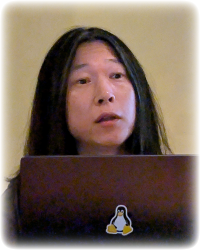

A 2026 DAMON update
DAMON, Park began, is a kernel subsystem that provides efficient monitoring and operations for memory management. At its core, it spawns a kernel thread that samples memory accesses every 5ms. The results are combined into data that is returned to user space every 100ms, though these intervals can, of course, be tuned manually or automatically. The access information returned describes the location, stability, and frequency of memory operations. The system was designed to be both accurate and lightweight, and to be both tunable and auto-tuning. On a typical system, it imposes a performance overhead of less than 0.1%. This subsystem was first merged into the 5.15 kernel release; it is enabled in many distribution kernels at this point.
The "second face of DAMON
", Park said, is the DAMOS machinery, which
provides operations to change how memory is managed. Operations can, for
example, force out cold memory, or migrate memory between tiers depending
on its usage patterns. More information is available on the DAMON web site.
Tiering
At the 2025 Summit, Park said, he had described the damos_migrate operations, which had been merged for the 6.11 release. These operations facilitate the movement of pages between system RAM and CXL-attached memory — memory tiering, in other words. Work on TPP-DAMON (where "TPP" stands for "transparent page placement") was underway, with the ability to automatically tune thresholds to yield high RAM utilization. Work on tiering is continuing, but a single thread has proved to be too slow for the task. So TPP-DAMON has moved to a multiple-thread model. It is able to produce a 94% improvement in a llama.cpp benchmark. TPP-DAMON was merged for 6.16, with control-group awareness being added in 6.19. Development has moved elsewhere, though, so TPP-DAMON has already landed in support mode.

Automatic tuning of interleaving is still a work in progress; it works in the physical address space. It can request the migration of pages with the goal that a given level of memory pressure should be maintained, or that a specific percentage of hot pages be placed in CXL memory. This feature was merged for the 7.1-rc1 release.
Meanwhile, the effort that was going toward TPP-DAMON is now focused on NUMA-TPP-DAMON, based on the observation that tiering is, in the end, just a special case of NUMA placement. In the new model, a system has a set of memory accessors (CPUs, GPUs, or other devices that access memory), and a set of promotion paths that can be used for memory. The concepts are there, he said, but this work is still in a brainstorming phase.
Davidlohr Bueso asked whether use of NUMA-TPP-DAMON would require disabling NUMA balancing; Park said it would not. Bueso expressed concern about the different layers fighting with each other over memory-placement decisions, but Park thought that it could be avoided with careful goal setting.
Data attributes monitoring
Last year, he said, developers had started work on page-level attribute monitoring, designed to answer questions related to, for example, how many bytes in a given region are backed by huge pages or are charged to a given control group. This monitoring has been implemented, but the overhead is high. The feature has been improved, with a number of important fixes arriving in 6.15, but the overhead problem remains.
There is a new data attributes monitoring project being started, with the goal of supporting use cases like fleet-wide monitoring. It implements a sampling-based, page-level monitor with the ability for users to register probes to narrow the set of interesting pages. Each probe filters pages based on attributes like type (anonymous or file-backed), control-group membership, idleness, and so on. These probes can act as a DAMOS filter.
This system turns out to be lightweight and scalable, using the existing
access-sampling logic. Its accuracy, though, is "arguable
",
depending on multiple workload-related factors. Page-level monitoring can
be used to get more accurate information, he said, if the associated
overhead is acceptable.
The first version of the data attributes monitoring patch set is on the mailing list, he said, and may be declared ready soon. At this point, the main feature is monitoring of anonymous status, but the future plans are somewhat more ambitious. The intent is to turn data access into another attribute that can be monitored, and to add a pg_idle DAMON filter that can act on that attribute. DAMON will support attribute-based splitting and merging of regions. There will be a richer set of access-check primitives, with filters for data from page faults or the system's performance monitoring unit (PMU). This feature could end up being the base for the NUMA-TPP-DAMON work.
Monitoring data from other sources is an active area of consideration. Park would like to be able to classify data accesses in a number of ways, including the source NUMA node, control group, or thread. This data would help in the writing of cache-aware sched_ext CPU schedulers; it could also be helpful for NUMA-TPP-DAMON. It could be used, for example, to find the virtual machine doing the fewest writes, which would normally be the easiest live-migration target.
Currently, DAMON is using the page-idle bit for access checking; the
resulting data lacks any information about who accessed the memory or what
type of access was done. To get better data, he would like to pull in events
from other sources, including the page-fault handler and the PMU. The NUMA
subsystem, for example, collects data on which nodes are accessing pages
now; a "prototype hack
" exists to feed that data into DAMON. But
that use of the data interferes with the original NUMA-balancing intent,
which is not the desired result.
So, Park said, an important next step is the cleaning up of the NUMA-hinting code; that should happen before any extensions are attempted. But there will still be concerns about interference between DAMON and NUMA hinting. Since both will be using the page-idle bits, each will "measure" faults caused by the other. One way to address that problem would be to make NUMA hinting and DAMON mutually exclusive, so that only one could be built into the kernel; it is a simple but inflexible approach, and would put distributors in the difficult position of having to decide which feature to enable.
An alternative is run-time isolation, where only one of the two features could be active at any given time. This is a clean and flexible solution, but relatively hard to implement. Partial isolation is yet another approach, where page marks would be left in place during transitions from one subsystem to the other. That would make transitions quicker, at the expense of muddying the data somewhat. Or, Park said, the two subsystems could just be allowed to interfere with each other; whether that would result in real problems is not yet clear. DAMON should be able to handle that interference. Concurrent use of the two subsystems would be rare, so maybe the whole problem can just be ignored. Kiryl Shutsemau pointed out that, since NUMA balancing uses sampling, losing some information is not necessarily a big problem.
Park's proposal was that, once the needed cleanup work is done, the first implementation would use either build-time isolation, or just ignore the problem altogether.
Another source of useful data could be the PMU, via the perf events subsystem. There are RFC implementations integrating the PMU into DAMON circulating, and the perf maintainers seem to have no problems with the idea. But, data out of the PMU is hardware-specific and it is harder to get useful data inside virtual machines. So the utility of this data in the general case is not entirely clear.
DAMON-X
Park briefly discussed a concept that he called "DAMON-X", otherwise known
as "DAMON that just works
". DAMON offers manual tuning knobs for
users who want them, and automatic tuning for everybody else, but each
DAMON module runs exclusively of the others. Park is working on a solution
where all modules share the same basic monitoring parameters, and differ
only in the DAMOS schemes that they offer. A single context can run
multiple schemes, which users can install and uninstall at will. To the
extent possible, all of this will auto-tune itself and simply work. A
proof-of-concept implementation is to be expected later this year.
Access-aware transparent huge pages
Transparent huge pages (THPs) are good in that they can make programs run faster. But they can also cause internal fragmentation and memory waste. Users have some control over the use of THPs via madvise(), but it is hard to provide the right advice; perhaps DAMON can help. The damos_hugepage module will track access patterns and, depending on how memory is being used, collapse base pages into huge pages or split huge pages apart again. It was able to remove 80% of the THP-caused memory bloat from one benchmark while preserving 46% of the performance gain. The work is an early-stage prototype, though, and the benchmark results are not stable.
Park would like to solidify this work, and was wondering whether the damos_hugepage module should do both the assembly and splitting of huge pages, or just one of the two. Developers at Huawei have come up with a collapse-only approach that works by finding three CPU-intensive processes on the system; the hot memory areas of those processes are then collapsed into huge pages. After a defined period, a new set of three is chosen and the process starts over again. This work has yielded good results with MySQL-based workloads.
In general, though, the question of whether DAMON should collapse base pages into huge pages, split huge pages back apart, or both, is an open one. A system that is running in the thp=always mode may not need DAMON to create huge pages. The THP shrinkers, which can split huge pages at need, already exist, so DAMON may not need to do that either. The best set of operations is unclear at this time.
There is also the question of whether the THP primitives should operate in the virtual or physical address spaces. Collapsing a process's pages necessarily involves working within that process's virtual address space. There is, of course, the question of choosing which process to operate on; perhaps that choice could be left up to users. Working in virtual address spaces raises the possibility of interference with DAMON-X. The splitting operation, instead, only needs access to physical addresses, and would have no such interference concerns.
The final question Park raised had to do with the setting of thresholds for the degrees of hotness (for collapsing) or coldness (for splitting). These could perhaps be tuned automatically, but doing that properly depends on what the goal is. Possible goals could be a given ratio of huge to base pages, or a specific TLB-miss rate, though the latter would be hardware-specific. Other possible goals could be expressed in terms of memory bloat or pressure.
As time ran out, David Hildenbrand suggested that the splitting of huge
pages by DAMON might not ever be a good idea. When the system has put
together a huge page, it makes sense to keep it whole if possible; if that
page is not being utilized fully, then perhaps the better solution is to
migrate its contents to base pages elsewhere. He also wondered how the
hotness of huge pages could be measured; since there is only a single
access bit, there is no immediate indication of how much of any given huge
page is being accessed.
| Index entries for this article | |
|---|---|
| Kernel | Memory management/DAMON |
| Conference | Storage, Filesystem, Memory-Management and BPF Summit/2026 |
Posted May 8, 2026 18:19 UTC (Fri)
by sjpark (subscriber, #87716)
[Link]
FYI, the slides that were used for the session are available at https://github.com/damonitor/talks/tree/master/2026/lsfmmbpf
Posted May 14, 2026 18:19 UTC (Thu)
by jcpunk (subscriber, #95796)
[Link]
Slides
numad?